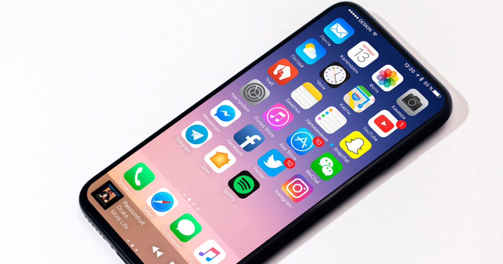

Especificación del nuevo iPhone 8
Por: Joaquín Hernández Martínez
@downhilljoaquin
En la WWDC de este año, nos hemos quedado pensado acerca del nuevo iPhone 8, ya que no fue presentado y solo sabemos de los rumores que trae detrás de este smartphone. Se han publicado supuestas fotos, vídeos, e información de como sería el nuevo iPhone de este año, también estamos a pocos meses de que pudiera ser presentado.
Como sabemos Apple aún no ha revelado ni fecha de lanzamiento ni nada por el estilo, a los amantes de los productos de está gran compañía, nos tiene en suspenso, ya que algunas de las características que se han rumorado son las siguientes:

PANTALLA: En algo de lo que estamos seguros, es que este nuevo iPhone contará con una pantalla OLED de 5.8 pulgadas, que será una pantalla que abarcará la mayoría de la parte frontal.
TOUCH ID: Otra de las cosas que podría cambiar en el nuevo iPhone, es que Apple podría poner el sensor en el display, también no se puede descartar que lo incluyan en la parte posterior.
PROCESADOR: Sin nada más y nada menos, incluiría un procesador A 11, por supuesto vendría acompañado del nuevo iOS 11.
CÁMARA: Una de las cosas que hemos visto es supuestas fotos y vídeos es que ahora la cámara estará de forma vertical, obviamente traerá mejoras tanto en la trasera como en la frontal, ya que Apple en la WWDC de este año, anunció que sacará un nuevo entorno de desarrollo para aplicaciones de realidad aumentada.
MÁS RESISTENTE AL AGUA: Se ha especulado que este nuevo dispositivo pueda tener a certificación del IP68 con la capacidad de estar en el agua aproximádamente un rango de 30 minutos con la una profundidad de 1.5 metros.
CARGA INALÁMBRICA: Uno de los primeros rumores fue de que el nuevo iPhone podría incluir la función de carga inalámbrica.

Apple celebraría 10 años con el teléfono que vino a revolucionar el mundo de los smartphones, es por eso que todo el mundo está intrigado de como lucirá este nuevo dispositivo, tenemos altas expectativas porque podría ser que Apple una vez más nos sorprenda.
Artículos Relacionados
IOS 11

La WWDC 2017, este año no fue la excepción para presentarnos la llegada del nuevo IOS 11, este nuevo sistema operativo viene con grandes novedades. Esta nueva actualización, la tendremos disponible para otoño de este año, se han lanzado ya BETA de IOS 11 para los desarrolladores.
IMAC PRO

Apple ha presentado uno de sus dispositivos de más alta gama que le ha llamado iMac Pro, también en la WWDC 2017 presento renovación del MacBook, MacBook Pro, iMac, y iMac Pro.
iPhone 8: ¿Diseño final? Olixar muestra sus fundas para el iPhone8

Año tras año año, solemos ver al inicio de las ventas y, o reservas de fundas para los siguientes modelos de iPhone, antes de que estos se presenten de forma oficial. Pero en este caso la compañía de fundas y accesorios para los dispositivos móviles Olixar se adelanto bastante, dejando ver las fundas y protectores de pantalla para un nuevo modelo de iPhone.